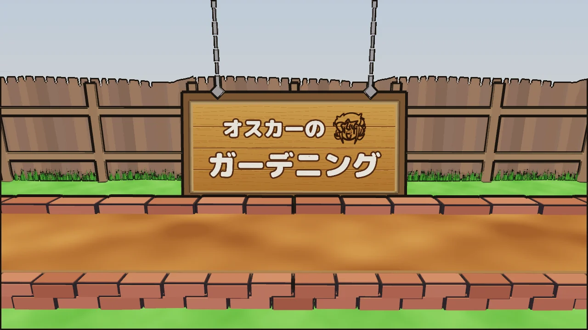
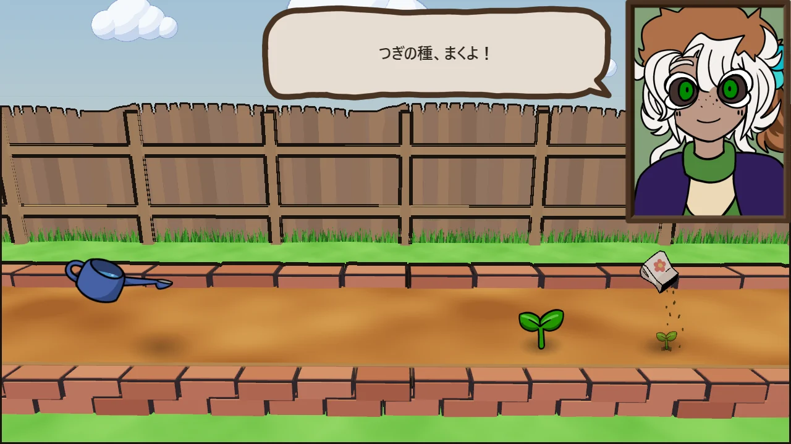
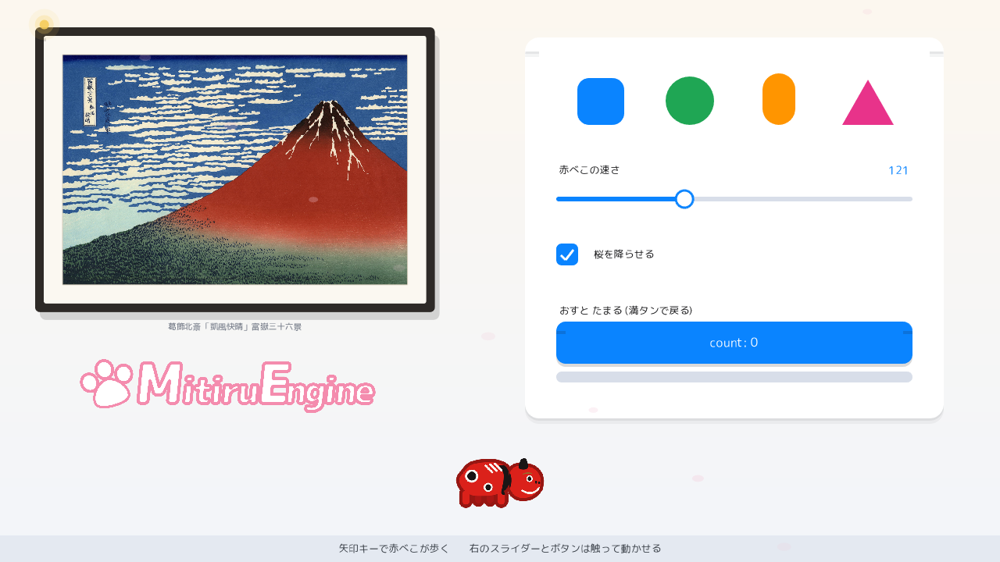
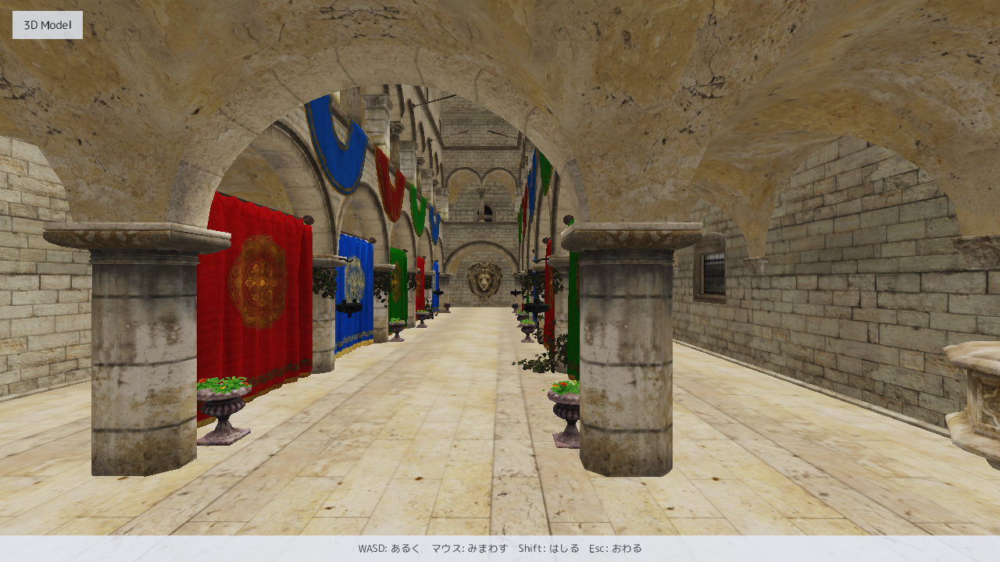

MitiruEngine
MitiruEngine
制作例
MitiruEngine で完成させたゲーム
「オスカーのガーデニング」は、まいたリズムを次の小節で返すタイミングゲームです。庭は C++ から直接描画し、会話と結果には HTML / CSS を使用しています。ゲームの全状態は、1 個の struct にまとめています。

庭の立て札を使った題字表示。

まいた種が、1 小節かけて判定線へ届きます。

拍が合うと花が咲き、結果を本数で示します。
このほかに、ノベルゲーム「ハトを育てよう」、クッキング × ノベル「かえるくれーぷ」、流体シミュレーションを消し方に組み込んだ落ちものパズル「FLUID DROP」が動作しています。作品一覧を見る
概要
動作環境と配布条件
| 対応 OS | Windows 10 / 11（x64） |
| 使用規格 | C++20 |
| 入力 | キーボード / マウス / ゲームパッド（Xbox 系・DualShock 4 など、設定不要） |
| 画面 | HTML / CSS（CEF）、または C++ から直接描画 |
| ライセンス | 独自ライセンス（使用は自由、改変・再配布は不可） |
| 入手方法 | installer.exe / zip ・ GitHub Releases |
実装例
小さなコードで動かす
状態を struct に置き、update と draw を記述します。mitiru run で実行できます。
// 矢印キーで動かすだけのゲーム
struct MyGame {
float x = 600, y = 360;
void update(Input in, float dt) {
if (in.down(Key::Right)) x += 320 * dt;
if (in.down(Key::Left)) x -= 320 * dt;
}
void draw(Screen& s) {
s.fillCircle(x, y, 24, color::Cyan);
}
};
MITIRU_GAME(MyGame)
# 作成して実行
mitiru new my-game
cd my-game
mitiru run収録内容
機能を確認できる同梱サンプル
各機能を個別に確認できるサンプル集です。掲載画像は実行画面で、サンプル集にはコード全文を掲載しています。
絵、文字、図形、動きをまとめたサンプル。

四角、円、線、グラデーション、多角形を表示します。

枠内の整列、折り返し、はみ出した部分の省略を確認できます。

キーボード、マウス、ゲームパッドの入力を表示します。

位置、大きさ、回転、透明度の変化とイージングを確認できます。
拡大、回転、反転、半透明、アニメーションを扱います。

画面より広い場面を追ってスクロールします。

効果音と BGM の再生を視覚表示とともに確認できます。

C++ のひとつの値を、6 つの HTML 表示へ同時に反映します。JavaScript は使いません。

HTML パネルの操作を C++ の図形へ反映します。JavaScript は使いません。

実行中に、ゲーム内部の状態を確認します。

積んだブロックを数秒前の状態へまとめて戻します。

セーブ、ロード、取り消し、やり直し、初期化を扱います。

GPU 3D、影、アンチエイリアス、半透明、skybox のサンプルです。

26 万ポリゴンの宮殿を、マウス視点と WASD 操作で歩きます。
設計と開発機能